背景、方案与关键工程决策
一个 6×6 棋盘的滑块解谜：场上有横竖不同长度的车辆，只能沿自身轴向滑动， 目标是把红色小车从右侧第 3 行的出口开出去。计步口径刻意选「滑动次数」 而非「滑动格数」—— 一次滑 3 格仍算 1 步，这让最优解常常需要先倒车再前进。
工程上的核心目标是同一套代码同时产出网页版与微信小游戏版。为此把整个项目切成
四层：纯逻辑内核（规则 / 求解器 / 状态机 / 存档）不依赖任何平台；
渲染层只画像素、不碰宿主 API；所有平台能力（画布、存储、音频、图片、广告、分享）
收敛到一个冻结的 Platform 接口后面，两端各给一份实现。
这使得换端只改一行装配代码，复用率约 95%。
关卡不是手摆的，而是由 Python 参考求解器反向游走生成 + BFS 校验最少步数， 并用一套「去重指纹」剔掉等价局面。为避免两套实现漂移，CI 里会拿 TypeScript 求解器 复算 Python 算出的每一关指标（最少步数、滑动格数、难度、状态数），逐关比对。
规则极简，但决策空间不小
按住车沿自身轴向拖动，前后画出半透明虚影提示可占位范围；松手吸附到最近合法格。非法方向播放短促回弹，不计步。
提示基于求解器算出的当前最优下一步，只揭示该动哪辆车、往哪个方向滑几格，不直接给完整解法 —— 保留思考乐趣。
三星 = 达到 par（BFS 算出的最少步数），两星 = par + 2 以内，完成即得一星。结算时给出「比最少步数多 N 步」的明确对照。
撤销以走子序列弹栈实现，与存档、防作弊共用同一份数据。切后台或退出后再次进入，会自动重放上次的走子继续玩。
不做人工难度标注：关卡的最少步数、状态空间大小与分支度由求解器算出，据此分档为入门 / 简单 / 中等 / 困难。
Python 参考实现从终局反向游走生成局面，再用求解器校验「可解且步数落在目标区间」，同时用去重指纹剔掉等价局面。
以下截图全部由脚本从真实运行的构建产物中抓取，非手绘示意
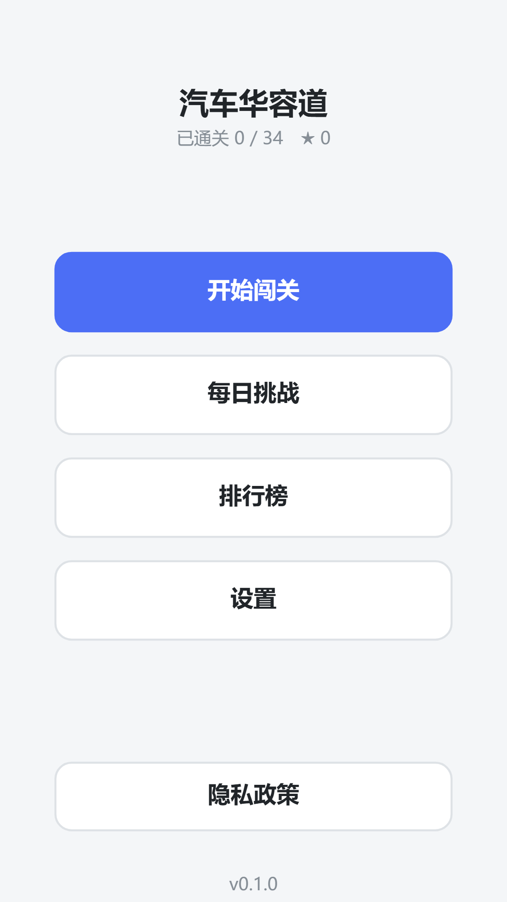
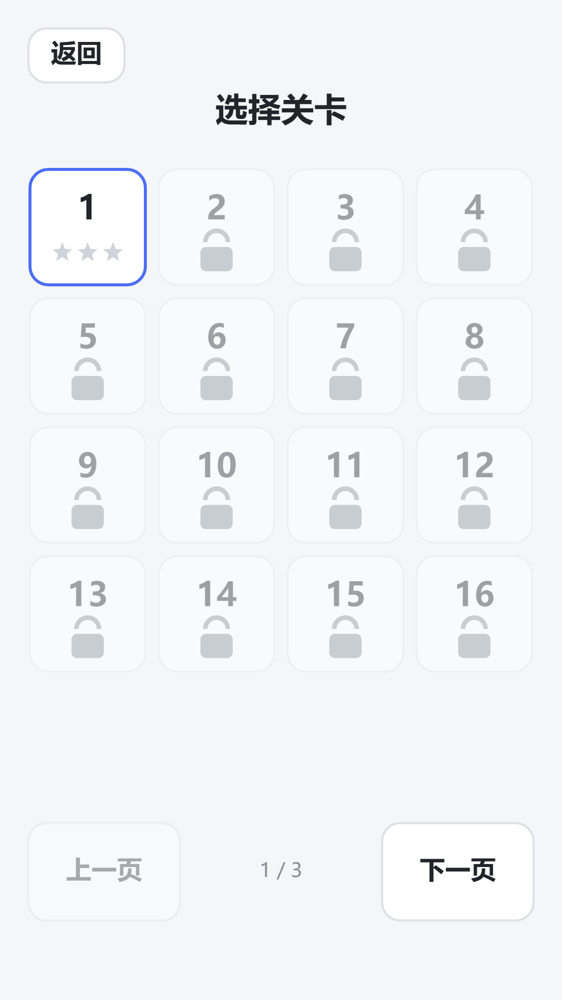
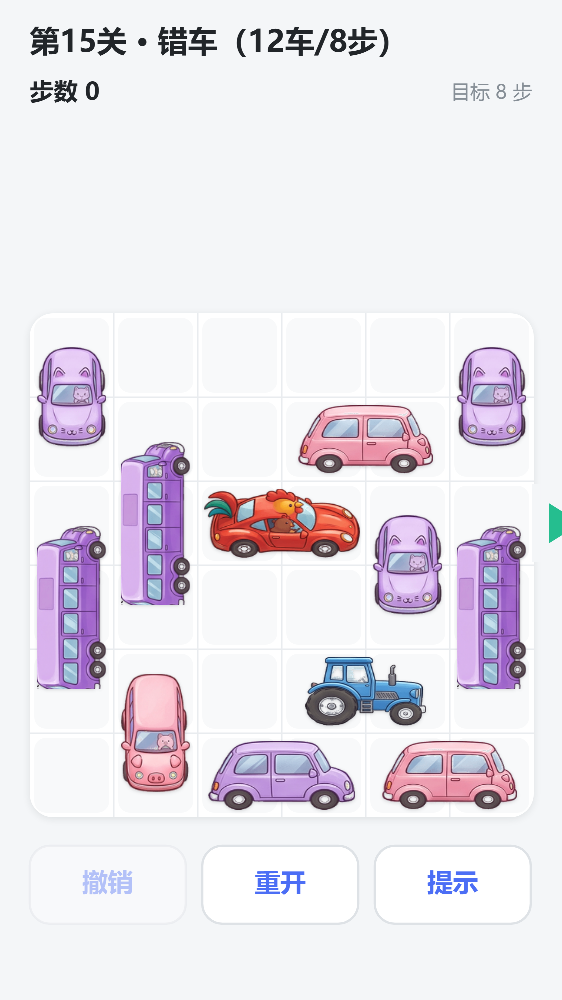
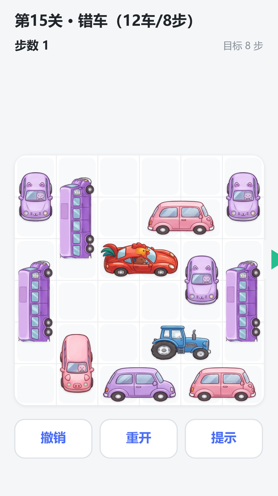
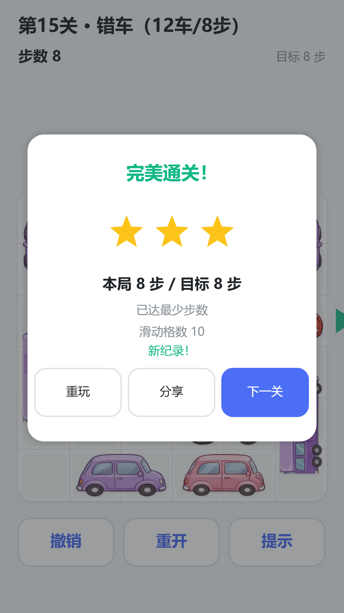
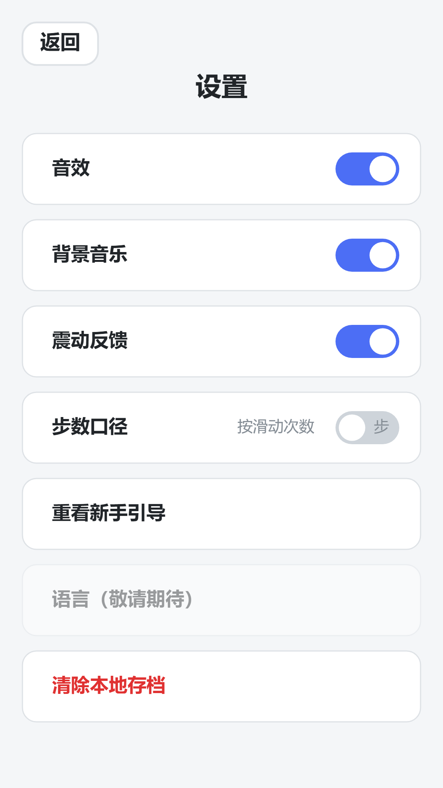
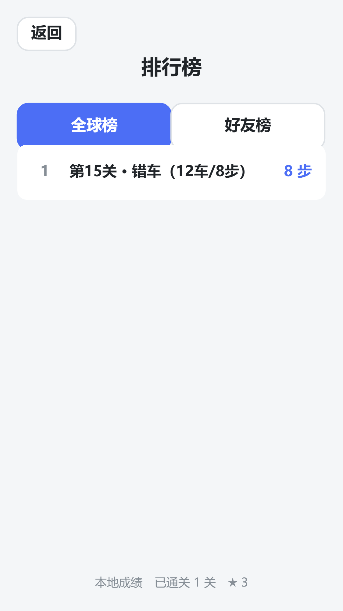
棋盘上只可能出现这 4 种形态；同关内不同车辆颜色互不相同，避免误以为可以互换
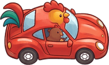
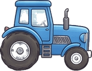
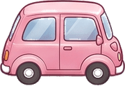
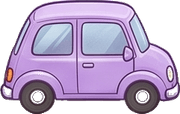
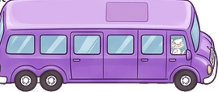
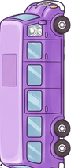
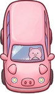
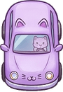
四层单向依赖，平台能力全部收口到一个冻结接口后面